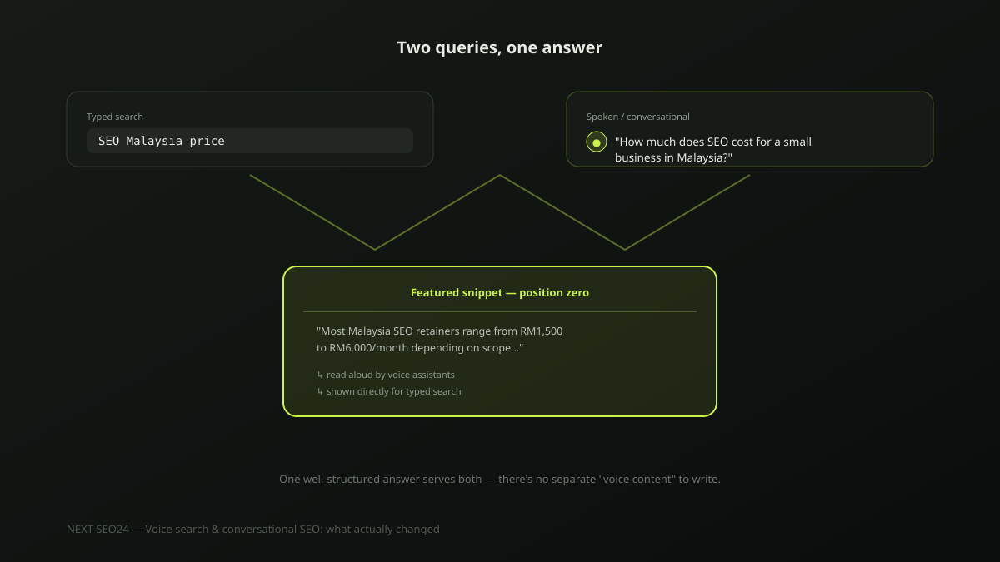

Voice search and conversational SEO: what actually changed
Around 2016, it was widely predicted that half of all searches would be voice-based within a few years. That didn't happen as a separately-tracked phenomenon. What did happen is more useful and less hyped: search queries, typed and spoken, have gotten longer, more conversational and more question-shaped. Here's what that actually means for how you write content.
The voice search hype vs. what actually happened
"Voice search" as a distinct, trackable channel with its own separate ranking factors never fully materialized the way early forecasts claimed. Google doesn't report a separate voice search ranking system, and there's no dedicated "voice SEO" toggle to optimize for. What's real is a broader shift: people now phrase more of their queries — spoken into a phone, typed into a search box, or asked to an AI assistant — as natural questions rather than bare keyword fragments. Treat this as one continuous trend, not three separate strategies.
What actually changed: conversational, question-shaped queries
"SEO Malaysia price" is a keyword fragment. "How much does SEO cost for a small business in Malaysia" is the same intent, phrased the way a person actually thinks and speaks it. Both types of query still happen, but the conversational, longer-tail version has grown — driven partly by voice input and partly by users now accustomed to typing full questions into AI chat interfaces. Content written only in keyword-fragment style increasingly misses this half of real search behaviour.
Write content that matches how people actually ask
The practical fix is straightforward: use full, natural questions as H2 and H3 headings, phrased exactly the way a customer would ask them out loud — not a keyword-optimized fragment. Follow each question with a direct, complete answer in the first sentence or two, before adding supporting detail. This structure serves a featured snippet, a voice assistant reading an answer aloud, and a human skimming the page equally well — it's one piece of well-structured content, not three separate optimizations.
Featured snippets: still the real prize
When a voice assistant does answer a question aloud, it's almost always reading from the same featured snippet ("position zero") content that also displays for a typed query — there is no separate content source reserved for spoken answers. Winning the featured snippet is still the actual goal; a concise, direct 40-60 word answer immediately following the question heading is what gets pulled, followed by the supporting detail that keeps a human reader engaged.
Local conversational queries: "near me" and "open now"
Local, conversational queries — "where can I get my aircon serviced near me," "is this shop open now" — depend on the same fundamentals as any local search: an accurate, complete Google Business Profile with correct hours, and location content that answers the underlying question directly. See our Local SEO and Google Maps ranking guide for the full method — the conversational phrasing of the query doesn't change what actually needs to be accurate on your profile.
Structured data: what actually helps, and what doesn't
Google's Speakable schema exists specifically for news and publisher content that Google Assistant reads aloud — it's not designed for general commercial or local business content, and most SME sites see little practical benefit from adding it. The structured data that actually helps here is the same FAQPage schema used for any well-structured question-and-answer content; see our FAQ and HowTo schema implementation guide for working code. Don't chase Speakable markup as a "voice SEO" checkbox — it isn't built for your content type.
A practical checklist
- Headings phrased as full, natural questions — not keyword fragments
- A direct, complete answer in the first sentence or two after each question heading
- FAQPage schema on pages with genuine, specific questions and answers
- Google Business Profile hours and details kept accurate for "near me" and "open now" queries
- No Speakable schema added unless you genuinely publish news-style content read aloud by Assistant
If your content already answers questions clearly and directly, you're already optimized for conversational search — there's no separate voice strategy layered on top to chase.
Frequently asked questions
Did voice search really take over search the way it was predicted to?
No. Widely repeated predictions from around 2016 that half of all searches would be voice-based by the early 2020s did not materialize as a distinct, separately-tracked channel. What did happen is real but different: queries across all input methods, typed and spoken, have grown more conversational and question-based, partly influenced by how people now interact with AI chat interfaces.
Is optimizing for voice search a separate strategy from regular SEO?
No, and treating it as one is a common wasted effort. There is no separate "voice search index" to optimize for — a voice assistant answer is typically pulled from the same featured snippet or Knowledge Panel content that also serves typed search. The real work is writing clear, direct answers to specific questions, which happens to serve both.
Does Speakable schema actually help with voice search results?
Its practical impact is narrow. Speakable schema is designed for specific news and publisher content read aloud by Google Assistant, not general commercial or local business content. Most SME sites get more real benefit from writing clear, directly-answerable content and using standard FAQPage schema than from Speakable markup.
Want your content structured to win featured snippets?
Send us your site — we'll show you which pages are close to winning position zero and what's missing.
Chat on WhatsApp →